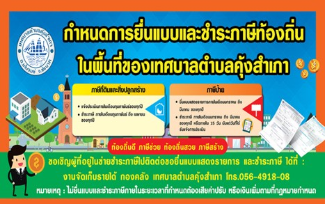

กิจกรรมเด่น

เทศบาลตำบลคุ้งสำเภา จัดกิจกรรมและโครงการส่งเสริมคุณภาพชีวิตประชาชนในชุมชน
คณะผู้บริหารและเจ้าหน้าที่ลงพื้นที่ตรวจเยี่ยมและดำเนินกิจกรรมเพื่อประโยชน์สุขของพี่น้องประชาชนในเขตเทศบาลตำบลคุ้งสำเภา...
อ่านรายละเอียด